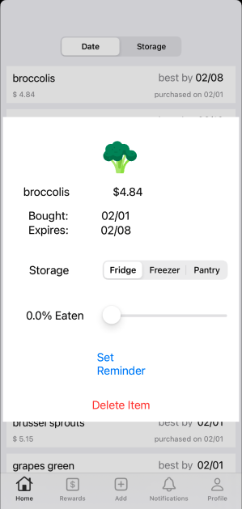

About
Welcome to Cooler!
Of the 81 million Tons of food wasted in the US per year, 30M tons comes from inside our own homes.
No one likes to waste food (or the money spent on it) but it happens all the time! Why is that?
There is no easy way to track and manage your personal food inventory manage… until now!
Introducing Cooler - an app that helps you easily track your food inventory and reminds you to use it before you lose it!
Upload Information - Snap a pic of your receipt, upload a pic of your receipt, or manually add items!
Choose your Storage Method - Certain foods last different times depending on storage! We have set certain foods with defaults, but feel free to change them!
Get Reminded - You’ll receive a notification before the food is set to expire - that way, you can use it (or toss it so it doesn’t stink up your fridge!) Delete it or swipe right on the “% Eaten” slider to remove it from Cooler!
